전자기기기능사 (2002-07-21 기출문제)
1과목: 전기전자공학
1. 자체인덕턴스가 100mH, 상호인덕턴스가 70mH이며, 누설 자속이 없는 2개의 코일을 차동으로 접속하면 합성 인덕턴스는 몇 mH 인가?(오류 신고가 접수된 문제입니다. 반드시 정답과 해설을 확인하시기 바랍니다.)
- 5
- 10
- 15
- 50
(정답률: 38%)

2. 피상전력은?
- 전압의 실효값×전류의 실효값이며 단위는 VA이다.
- 전압의 최대값×전류의 최대값이며 단위는 VA이다.
- 전압의 실효값×전류의 실효값이며 단위는 W이다.
- 전압의 최대값×전류의 최대값이며 단위는 W이다.
(정답률: 48%)
3. 제너 다이오드를 사용하는 회로는?
- 검파회로
- 고압 정류회로
- 고주파 발진회로
- 전압 안정회로
(정답률: 66%)
4. 그림과 같은 연산증폭회로의 출력전압은?
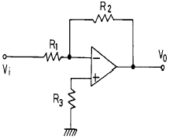
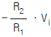
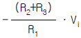
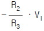
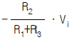
(정답률: 45%)
5. 그림과 같은 이미터 접지형 증폭기에서 콘덴서 C2를 제거하면 어떤 현상이 일어나는가?
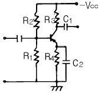
- 발진
- 충실도 감소
- 잡음 감소
- 이득 감소
(정답률: 53%)
6. 푸쉬풀 전력증폭기에서 찌그러짐이 작아지는 이유는?
- 기본파가 상쇄되기 때문에
- 기수고조파가 상쇄되기 때문에
- 우수고조파가 상쇄되기 때문에
- 우수 및 기수고조파가 상쇄되기 때문에
(정답률: 72%)
7. 그림과 같은 미분회로의 입력에 장방형파 ei가 공급될 때 출력 eo 의 파형 모양은? (단,
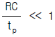
일 경우로 한다.)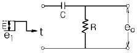
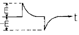
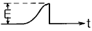
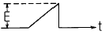
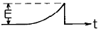
(정답률: 57%)
8.
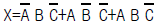
를 간략화 하면?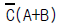
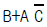
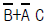
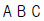
(정답률: 57%)
9. 주어진 표는 논리 게이트의 진리값 표 중 일부를 보인 것이다. 빈칸 ( )에 해당되는 것은?
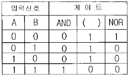
- OR
- NAND
- 플립플롭
- 인버터
(정답률: 78%)
10. 원자핵의 구속력을 벗어나 물질내에서 자유롭게 이동이 가능한 것은?
- 양자
- 중성자
- 분자
- 자유전자
(정답률: 87%)
11. 위상 일그러짐의 원인으로 옳은 것은?
- CRL 등의 영향으로 신호가 주파수에 따라서 시간의 늦어짐이 일정하지 않기 때문에
- 동작특성이 비직선성이기 때문에
- 증폭소자에서 잡음이 발생하기 때문에
- 출력의 진폭이 입력신호진폭에 정비례하지 않기 때문에
(정답률: 33%)
12. "회로망에서 임의의 접속점으로 흘러 들어오고 흘러나가는 전류의 대수합은 0 이다"라는 법칙은?
- 옴의 법칙
- 키르히호프의 법칙
- 패러데이의 법칙
- 가우스의 법칙
(정답률: 82%)
13. 2x10-6 C의 전하에 5x10-3N의 힘이 가해졌다면 그 때의 전계의 세기는 몇 V/m 인가?
- 1×104
- 2.5×103
- 1×1010
- 2.5×109
(정답률: 62%)
14. 반도체 소자들 중 광전효과와 관계없는 것은?
- 광다이오드(photo diode)
- 태양전지(solar cell)
- 포토 트랜지스터(photo transistor)
- 홀 제너레이터(hole generator)
(정답률: 59%)
15. 그림과 같은 정류기의 어느 점에 교류입력을 연결하여야 하는가?
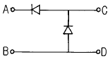
- A-B점
- C-D점
- A-C점
- B-D점
(정답률: 52%)
2과목: 전자계산기일반
16. 블로킹 발진회로의 진동(back-swing)현상을 방지하기 위한 방법은?
- 변압기를 밀결합시킨다.
- 트랜지스터의 증폭률을 높인다.
- 다이오드를 접속한다.
- 콘덴서의 용량을 크게 한다.
(정답률: 40%)
17. 컴퓨터가 어떤 변환을 거치지 않고 직접 이해할 수 있는 언어는?
- COBOL
- FORTRAN
- Machine language
- PASCAL
(정답률: 82%)
18. 1byte는 8개의 데이터 bit로 되어 있다. 8 bit를 서로 조합하면 몇 종류의 문자를 표현할 수 있는가?
- 16
- 32
- 64
- 256
(정답률: 52%)
19. 비수치적 연산 중에서 필요없는 일부의 bit 혹은 문자를 지워 버리고, 나머지 bit나 문자들만을 가지고 처리하기 위하여 사용되는 연산자는?
- OR
- EOR
- AND
- NOT
(정답률: 71%)
20. 자료의 입력 및 출력 형태가 FIFO로 되는 것은?
- 트리
- 데큐
- 큐
- 스택
(정답률: 58%)
21. 중앙처리장치를 크게 두 부분으로 분류하면?
- 연산장치와 기억장치
- 제어장치와 기억장치
- 연산장치와 논리장치
- 연산장치와 제어장치
(정답률: 74%)
22. 마이크로 컴퓨터 시스템에서 CPU와 주변장치 사이의 통신이 이루어지며 창구 역할을 하는 것은?
- Memory map
- Address bus
- I/O port
- System clock
(정답률: 48%)
23. 거리, 속도, 가속도, 온도 등 물리적인 양을 입ㆍ출력으로 처리하는 컴퓨터는?
- 디지털 컴퓨터
- 아날로그 컴퓨터
- 전용 컴퓨터
- 범용 컴퓨터
(정답률: 54%)
24. 데이터의 흐름을 중심으로 시스템 전체의 작업 내용을 종합적으로 나타낸 순서도는?
- 개략 순서도
- 세부 순서도
- 시스템 순서도
- 프로그램 순서도
(정답률: 61%)
25. 제어장치의 구성 요소 중에서 다음에 실행 할 명령어가 기억되어 있는 주기억 장치의 주소를 갖고 있는 것은?
- Program Counter
- Instruction Register
- Memory Address Register
- Memory Buffer Register
(정답률: 58%)
26. 마이크로프로세서에서 누산기(Accumulator)의 용도는?
- 명령을 저장
- 명령을 해독
- 명령의 주소를 저장
- 연산 결과를 일시적으로 저장
(정답률: 87%)
27. 서브루틴의 복귀 어드레스가 보관되는 곳은?
- 스택
- 프로그램 카운터
- 데이터 버스
- 입ㆍ출력 버스
(정답률: 72%)
28. 컴퓨터를 이용하여 어떤 문제를 해결하기 위한 절차와 방법을 무엇이라 하는가?
- 프로그램
- 입曺출력 설계 단계
- 알고리즘
- 프로그램 실행 단계
(정답률: 59%)
29. 가동 철편형 계기의 구동 토크는 전류 I와 어떤 관계를 갖는가?(단, I는 코일에 흐르는 전류임.)
- I에 비례
- I2에 비례
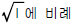
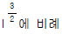
(정답률: 70%)
30. P형 진공관 전압계의 구성부가 아닌 것은?
- 정류부
- 증폭부
- 전원부
- 발진부
(정답률: 48%)
3과목: 전자측정
31. 전류력계형 계기 구조에 관계없는 것은?
- 고정코일
- 가동코일
- 제어스프링
- 영구자석
(정답률: 47%)
32. A-D 컨버터는 무슨 회로인가?
- 저항 측정회로
- 아날로그 양을 디지털 양으로 변환하는 회로
- 전류의 양을 전압의 양으로 변환하는 회로
- 전력을 전압으로 변환하는 회로
(정답률: 87%)
33. 참값이 100[㎃]이고, 측정값이 102[㎃]일 때 오차율은?
- -2 [%]
- 2 [%]
- -1.96 [%]
- 1.96 [%]
(정답률: 77%)
34. 오실로스코프로 직류에 포함된 리플(ripple)만을 측정하고자 할 때 INPUT MODE로 옳은 것은?
- DC
- AC
- GND
- DUAL
(정답률: 53%)
35. 수신기의 감도를 올리기 위하여 사용되고, 신호대 잡음비 및 선택도의 향상에 도움이 되는 회로는?
- 검파회로
- 중간주파 증폭회로
- 고주파 증폭회로
- 주파수 변환회로
(정답률: 43%)
36. 가동 코일형 계기로 교류 전압을 측정하고자 한다. 어떤 장치가 필요한가?
- 정류기
- 증폭기
- 혼합기
- 발진기
(정답률: 65%)
37. 정현파와 구형파 발진기에서 정현파가 만들어진 상태에서 구형파를 출력하기 위하여 사용되는 회로는?
- 적분 회로
- 미분 회로
- 필터(Filter) 회로
- 시미트 트리거(Schmitt trigger) 회로
(정답률: 72%)
38. 회로시험기로는 측정이 곤란한 것은?
- 직류전압
- 직류전류
- 교류전압 및 저항
- 교류전압의 주파수
(정답률: 64%)
39. 정전 흡인력 또는 반발력을 이용하며, 주로 전압계로 쓰이는 계기는?
- 가동 코일형 계기
- 전류력계형 계기
- 유도형 계기
- 정전형 계기
(정답률: 62%)
40. 중저항을 측정할 때 널리 쓰이며, 정확도가 가장 높은 측정법은?
- 휘스톤 브리지법
- 캘빈더블 브리지법
- 코올라우시 브리지법
- 맥스웰 브리지법
(정답률: 52%)
41. 초음파를 이용한 측심기로 바다 깊이를 측정한 결과 4초의 왕복시간이 걸렸다. 바다속의 깊이는 얼마인가? (단, 바닷물 온도는 15℃, 초음파속도는 1527[m/sec])
- 6108[m]
- 38.1[m]
- 3⑤4[m]
- 1527[m]
(정답률: 77%)
42. 초음파 가습기의 원리는 초음파의 어떤 작용을 이용한 것인가?
- 소우나
- 펠티어효과
- 회절작용
- 캐비테이숀
(정답률: 72%)
43. 초음파 응용기기의 기능을 이용하는데 알맞지 않은 곳은?
- 공기속
- 물속
- 기름속
- 진공인 곳
(정답률: 68%)
44. 초음파 가공기에서 호온(horn)의 역할은?
- 공구의 진폭을 크게 하기 위해
- 진동을 강하게 하기 위해
- 공구와 결합을 용이하게 하기 위해
- 발진기와 임피던스 매칭을 하기 위해
(정답률: 52%)
45. 섬유 제품의 염색에 주로 이용되는 초음파 작용은?
- 분산 작용
- 확산 작용
- 에멀션화 작용
- 응집 작용
(정답률: 55%)
4과목: 전자기기 및 음향영상기기
46. 펄스레이다에서 전파를 발사하여 수신할 때까지 2.8[㎲]가 걸렸다면 목표물 까지의 거리는 몇[m]인가?
- 280
- 420
- 14
- 28
(정답률: 47%)
47. 유도 가열법으로 가열할 수 있는 것은?
- 목재
- 금속
- 유리
- 고무
(정답률: 79%)
48. 궤환 제어계(feed back control)에서 공정제어 제어량에 해당하지 않는 것은?
- 습도
- 전압
- 압력
- 온도
(정답률: 42%)
49. 전자 냉동기의 기본원리를 나타낸 것이다. "ㄷ"점에서 발열이 있었다면 흡열현상이 나타나는 곳은?
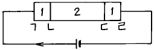
- ㄱ
- ㄴ
- ㄷ
- ㄹ
(정답률: 74%)
50. 전자 냉동기의 효율은?
- 흡열량/발열량
- 발열량/흡열량
- 흡열량/소비전력
- 발열량/소비전력
(정답률: 50%)
51. FM 수신기의 고주파 증폭에 전계효과 트랜지스터가 사용되는 주된 이유는?
- 입력 임피던스가 높기 때문에
- 증폭률이 높기 때문에
- 고주파 특성이 우수하기 때문에
- 회로 설계가 용이하기 때문에
(정답률: 43%)
52. 텔레비젼의 미세조정(화인,튜우닝)과 가장 관계가 깊은 것은?
- 브라운관의 직류 바이어스
- 국부 발진기의 주파수 변화
- 저주파 증폭기의 주파수 특성
- 영상신호의 이득 또는 레벨
(정답률: 52%)
53. 안테나 전력을 100(W)에서 400(W)로 증가하면 동일 지점의 전계강도는 몇배로 변하는가?
- 1.4배
- 1.7배
- 2배
- 2.8배
(정답률: 62%)
54. 특성 임피던스 75[Ω]의 선로에 100[Ω]의 저항 부하를 접속하였다. 반사계수를 구하면?
- 1/7
- 1/8
- 1/9
- 1/10
(정답률: 53%)
55. 주파수 50[MHz]인 전파의 1/4파장에 대한 값은?
- 1.5[m]
- 3[m]
- 15[m]
- 30[m]
(정답률: 41%)
56. 증폭회로에 1[㎽]를 공급하였을 때 출력으로 1[W]가 얻어졌다면, 이 때 이득은?
- 10[㏈]
- 20[㏈]
- 30[㏈]
- 40[㏈]
(정답률: 46%)
57. VTR의 재생 화면에 하나 또는 다수의 흰 수평선이 나타나는 드롭아웃(Drop Out) 현상은 무엇 때문에 생기는가?
- 수평 동기가 정확히 잡히지 않기 때문에
- 영상 신호에 강한 잡음 신호가 혼입되기 때문에
- 전원전압이 순간적으로 불안정 하기 때문에
- 테이프와 헤드 사이에 먼지 등이 끼기 때문에
(정답률: 71%)
58. TV 전파에 대한 설명으로 옳은 것은?
- 영상전파는 잔류측파대의 진폭 변조파이며 음성전파는 주파수 변조파이다.
- 영상전파는 잔류측파대의 주파수 변조파이며 음성전파는 진폭 변조파이다.
- 영상전파는 양측파대의 위상변조파이며 음성전파는 진폭 변조파이다.
- 영상전파는 진폭 변조파이며 음성전파는 양측파대의 주파수 변조파이다.
(정답률: 25%)
59. 전치 증폭기의 설명으로 옳지 않은 것은?
- 음량 조절 회로가 있다.
- 음질(tone)조정 회로가 있다.
- 마이크로폰이나 테이프헤드 등으로 부터 나오는 비교적 작은 신호 전압을 증폭한다.
- 전력 증폭을 하는 회로이다.
(정답률: 37%)
60. 조절계에서 P동작이라고 하는 것은?
- 온/오프 동작
- 비례 동작
- 적분 동작
- 미분 동작
(정답률: 63%)
L = L1 + L2 ± 2M
여기서 L1은 자체인덕턴스, L2는 상호인덕턴스, M은 상호인덕턴스의 부호에 따라 다릅니다. 차동 접속에서는 M이 음수가 되므로,
L = 100mH + 100mH - 2×70mH
= 60mH
따라서 합성 인덕턴스는 60mH이며, 보기 중에서 가장 가까운 값은 10이 됩니다. 하지만 이 문제는 오류가 있으므로 정답은 없습니다.